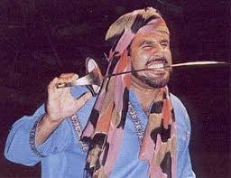
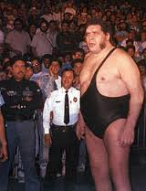
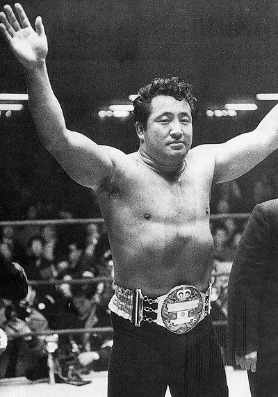

アントニオ 猪木（アントニオ いのき、英: Antonio Inoki, 1943年2月20日 - ）は、日本の元プロレスラー、実業家、政治家。日本を元気にする会所属の参議院議員（2期）、日本を元気にする会代表。本名：旧リングネーム：猪木 寛至（いのき かんじ）。神奈川県横浜市鶴見区出身。血液型AB型。新日本プロレス設立後のキャッチフレーズは「燃える闘魂[5]」（当初は「燃ゆる闘魂」）。日本プロレス所属時代のキャッチフレーズは「若獅子」。
愛称は「アントン」。元妻は、女優の倍賞美津子。倍賞との間に娘が一人いる。1991年にイラクのシーア派聖地カルバラーにてイスラム教に改宗しており、ムスリム名は「モハメッド・フセイン」[6]。 プロレスラー現役時代は新日本プロレスの創業や異種格闘技戦で活躍。
タイガージェットシン
タイガー・ジェット・シンのニックネームは「インドの猛虎（狂虎）」「狂える虎」。息子のタイガー・アリ・シンもプロレスラーであり、WWEのリングでも活動した。 フェンシングのサーベルを振りかざす姿で一世を風靡した悪役レスラー。しかし、ここぞという場面では正統派レスリングを見せ、アントニオ猪木らトップクラスのレスラーにも勝利している。言動には独自の哲学を徹底して貫いており、多くの関係者から一目置かれる存在となっている。 日本国外や地元トロントではベビーフェイスとして活躍を続ける一方、プロレス以外の様々な事業を経営している。プロレス業界のみならず、財界、政界とも繋がりがあり、北米インド人社会では最も著名な人物の一人である。
アンドレザジャイアント
アンドレ・ザ・ジャイアント（André the Giant、本名：André René Roussimoff、1946年5月19日 - 1993年1月27日）は、フランス・グルノーブル出身のプロレスラー。 公式プロフィールでは身長が7フィート4インチ（約223cm）、体重が520ポンド（約236kg）とされ、北米では "The 8th Wonder of the World"（世界8番目の不思議）、日本では「大巨人」などの異名で呼ばれた。 圧倒的な体格もさることながら、アームロックなどのレスリングテクニックでも観客を惹きつけることができる巨人レスラーとして、世界各地で活躍した。
力道山
力道山（りきどうざん、朝鮮語：역도산（ヨットサン、Yeokdosan / Yŏktosan）、朝鮮文化語：력도산（リョットサン、Ryeokdosan / Ryŏktosan）、1924年11月14日 - 1963年12月15日）は、日本のプロレスラー。本名・戸籍名・日本名：百田 光浩（ももた みつひろ）、旧名・出生名・朝鮮名：金 信洛（きん・しんらく、キム・シルラク、김신락（Gim Sinrak / Kim Sinrak））。大相撲の力士出身。身長176cm（プロレス時代の公称身長は180cm）、体重116kg。
- プロレスは好きですか？
- 好きです
- プロレスは好きですか？
- 嫌いです